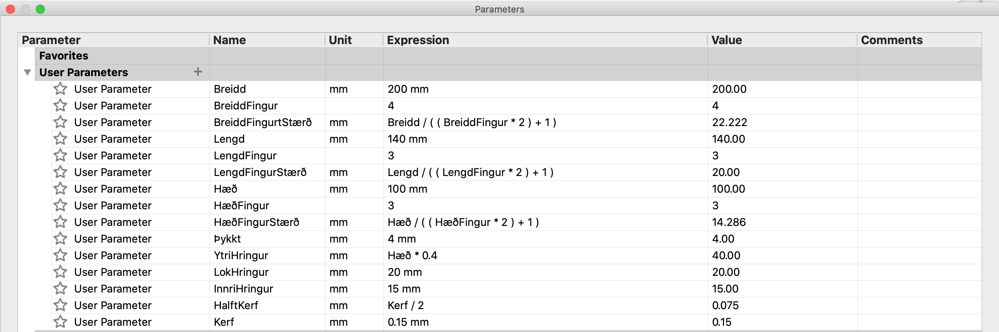
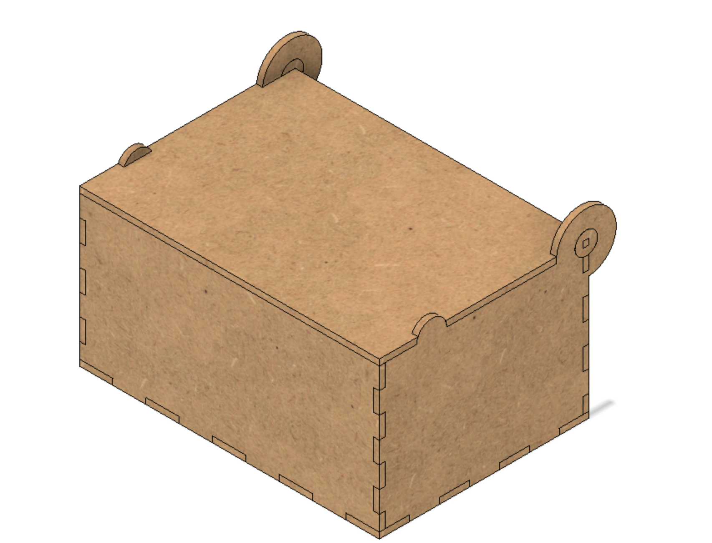
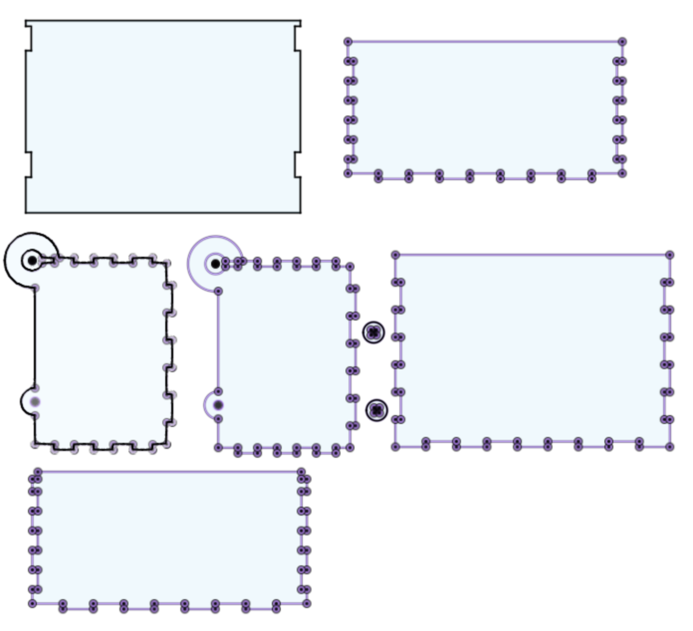
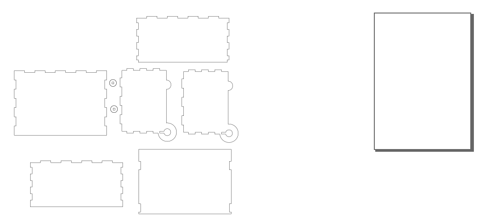
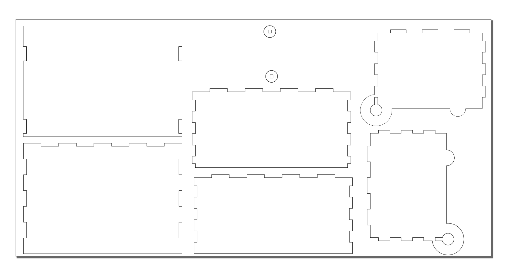
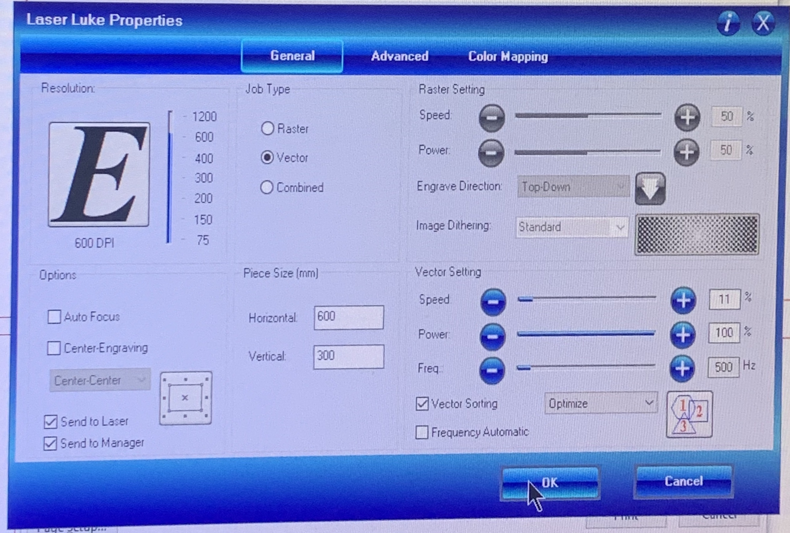
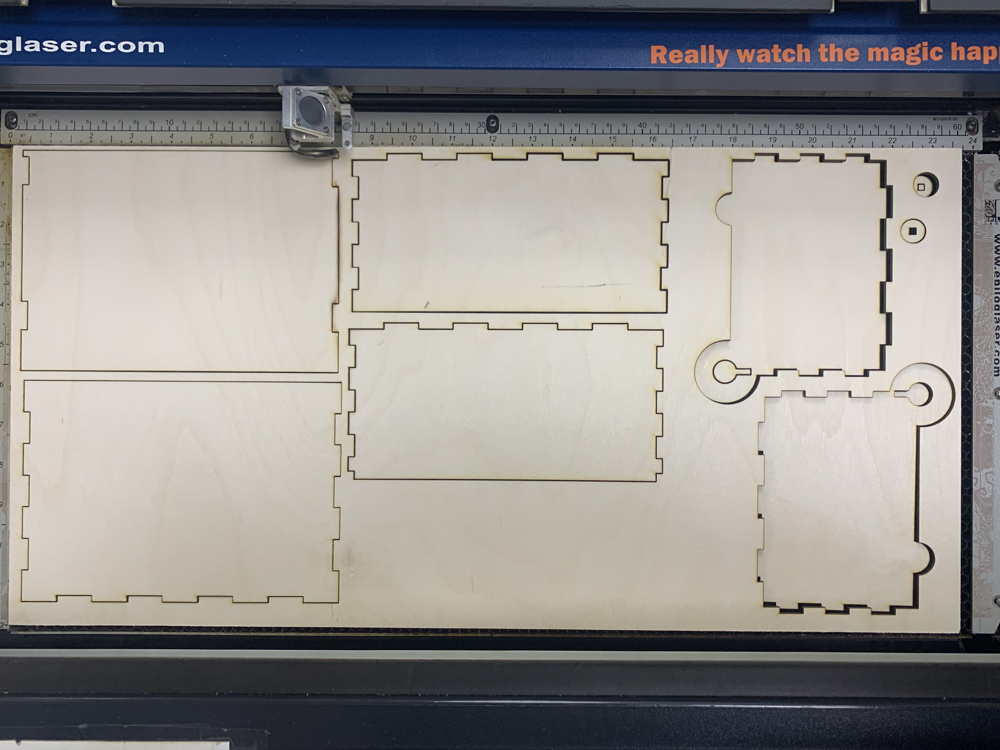
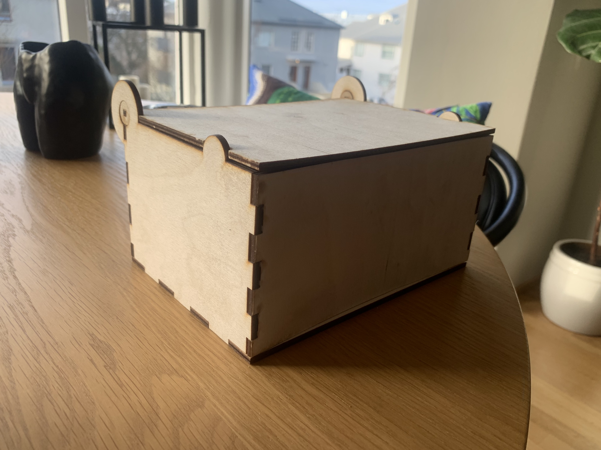
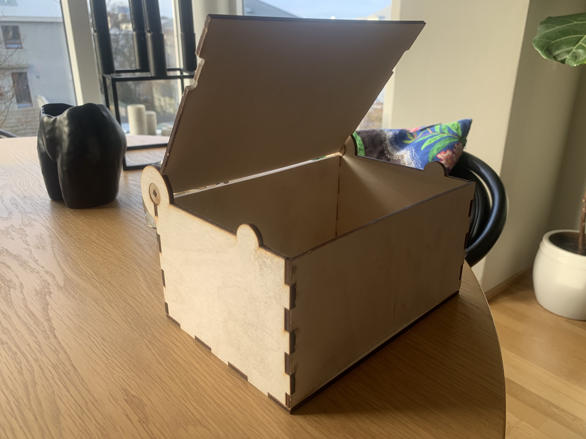

This is me.
Hannaðu parametrískt, geirneglt (pressfit) módel af byggingar einingum. Módelið þarf að vera skalanlegt þannig hægt sé að stilla kerf og efnisþykkt, ásamt stærðum á flötum, með því að vinna með parametrískar breytur.
Hægt er að velja um þrjár mismunandi gerðir af efni:
Skerðu út módelið og skjalfestu á heimasíðunni þinni.
Það kom á óvart hvað ég átti erfitt með að finna mér góða hugmynd að verkefni þegar kom að geislaskurðinum. Ég áttaði mig fljótt á því að ég væri ólíklega að fara finna mér nothæfa hugmynd ef ég færi á of langt hugmyndaflakk og endaði á því að ákveða að búa mér til lítið geymslubox.
Þar sem þetta var tiltölulega auðveld hugmynd ákvað ég að flækja hlutinn aðeins og á sama tíma dýpka skilning minn örlítið með því að setja snúnanlegt lok á boxið.
Nú þegar hugmyndin var komin á blað þá var næsta skref að koma því í teikningu í Fusion 360
Fyrirmæli verkefnisins voru að hanna parametrískt módel, sem þýðir að við getum ekki bara ritað slegið inn tölur þegar við erum að hanna hlutinn heldur skilgreinum við inn þekktar stærðir í "Parameters". Með því að gera það er hægt að breyta módelinu öllu mjög auðveldlega með því að einfaldlega breyta skilgreindum stærðum. Með þessari aðferð er hægt að skala módelið hvernig sem er. Ég byrjaði á því að skilgreina þær stærðir sem ég var að fara nota í parameters. Ég hafði enga reynslu á geislaskurði, til að læra skilgreina parameters og allt sem þess varðar horfði ég þá þetta myndband, sem fór vel yfir hvernig það er gert
Eftir að ég skilgreindi allar þær stærðir sem ég þurfti, þá gat ég hafist handa á teikningu módelsins.
Það má sjá á mynd að það er búið að skilgreina breidd, lengd og hæð, sem er allt sem maður þarf til að teikna box. Umfram því er búið að skilgreina fjölda fingur á hverri hlið og stærð þeirra sem er fjöldanum háð. Til að búa til snúanlegt lok úr við þarf litill kantur að fara í hring sem snýst svo í stærri hring, sem er allt skilgreint. Svo að lokum má sjá að það er búið að skilgreina þykkt á viðarplötunni, stærð á geislaþvermálinu (KERF) og helming þess. Í Hópverkefni 1 fórum ég og hópurinn minn í það að reikna út stærðina á KERF. Á næstu mynd má sjá útkomuna.
Þegar módelið var tilbúið á svo að færa teikningar fyrir hvern hlut yfir í IncScape. Til þess að það er hægt þarf að fletja út teikningarnar. Svo þegar það var búið, þá hliðraði ég allar ytri línur út um hálft kerf og einnig innri línur inn um hálft kerf. Þetta er gert til að reikna með þykktinni á geislanum þar sem þetta er allt mjög nákvæmt ferli.
Þetta var svo geymt sem .dxf skjal og opnað í IncScape
Þegar maður opnar skjalið í IncScape birtist það allt ekki á teiknisvæðinu. Ásamt því þá birtist tvær línur fyrir hvern hlut bæði hliðruðu og óhliðruðu línarnar.
Fyrsta skrefið er að eyða öllum innri línum svo að geislin skeri rétta línu. Næsta skref er að stilla prenturnarsvæðið okkar á okkar stærð sem er 300x600mm. Þegar það er gert á sér í stað lítil gestaþraut þar sem ég þurfti að láta allt passa inn á svæðið mitt. Þtta var niðurstaðan.
 Áður en maður heldur áfram í næsta skref gerir maður þetta fullklárt með að stilla línuþykkt á 0.02mm. Nú má geyma þetta sem pdf skjal á usb kubb og færa það yfir í tölvuna sem tengd er geislaskurðtækinu.Til að skera þetta út kveikjum við á geislaskeranum okkar. Geislaskerinn Luke varð fyrir valinu hjá mér þar sem okkar KERF prófun var gerð á þeim prentara.

Lokaskrefið var svo að stilla Laser Luke rétt upp. Eins og sést á mynd.
Eftir nokkrar mínútur var Luke búinn að skerfa þetta fallega út fyrir mig.
Ég fékk því miður smá bogna plötu og varð aðeins að nota sandpappír á sum horn, en mjög lítið. Þetta var lokaútkoman á módelinu mínu.
  Fyrir fljótlega yfirsýn má fylgja eftirfarandi skrefum.Eftir þetta verkefni er ég fullfær um að hanna módel og skera út með geislaskera sem er eitthvað sem ég hef aldrei áður gert.
Mér fannst þetta verkefni afskaplega skemmtilegt og lærdómsríkt.
If there are any questions please contact me via email, phone or doves.